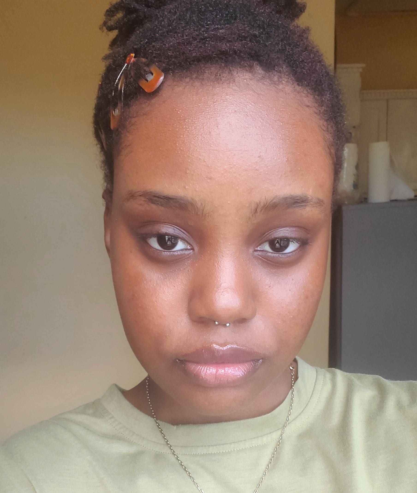

Detail-oriented and organized individual with experience in data entry, graphic design, and administrative support. Skilled in using ms suite, google suite, and online design tools to create impactful visuals and manage data. Passionate about leveraging analytical skills and creativity to drive efficient processes and enhance productivity. Proven ability to work collaboratively and independently, with a strong commitment to delivering quality results. Currently pursuing opportunities to further develop expertise in data analysis and contribute to data-driven decision-making.You can explore this page to know more about me and my profissional vision as a student who's currently pursing a bachelor of science in Computer Information Systems (CIS).
MISSION STATEMENT
My mission is to harness the power of data to uncover hidden patterns, inspire innovative solutions, and enhance operational efficiency. With a blend of creativity and technical expertise, I aim to provide insightful, actionable analytics that empower businesses to make data-driven decisions. I am dedicated to continuous learning, refining my skills, and delivering high-impact results that drive success and transformation
VISION STATEMENT
My vision is to become a leading force in the world of data analysis, where I transform complex data into compelling stories that shape strategic business directions. I aspire to pioneer data-driven solutions that not only optimize processes but also unlock new opportunities for growth and innovation. Through my work, I seek to be a trusted expert, helping organizations thrive in an increasingly data-centric world.
EDUCATION
2023-present
UNIVERSITY OF TECHNOLOGY, JAMAICA
Bachelor of Science in Computer Information Systems
2022-2023
INSTITUTE OF ADVANCED PLACEMENT
2017-2020
ARDENNE PREPARATORY & EXTENSION HIGH SCHOOL
SKILLS
Proficient in MS Office(Word, Excel, PowerPoint)
Proficient in Google Suite (Docs, Presentation, Sheets)
Data Entry
Graphic Design
EXPERIENCES
2022 (Grahphic Designer)
FREELANCE
2018 & 2022-2023 (Volunteer)
JAMAICA LIBRARY SERVICE, MAY PEN
2018-2020 (Secretary)
UNESCO CLUB, ARDENNE EXTENSION